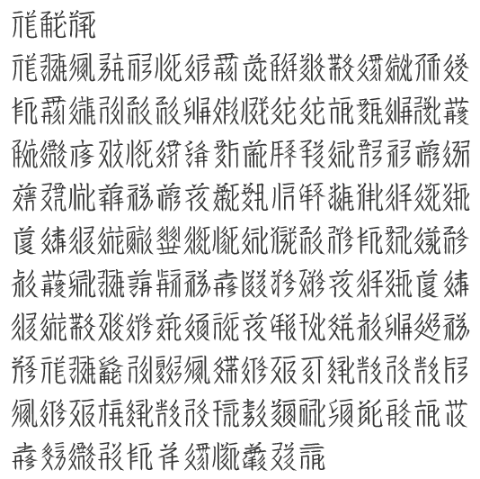

Tangut Yinchuan v. 11.001 is a font for the Tangut script that supports the full set of Tangut characters defined in Unicode version 11.0 (Tangut code chart). It is based on a font named XXZT (西夏字体 in Chinese) that was designed by Prof. Jing Yongshi 景永时 of the Beifang Ethnic University (北方民族大学) in Yinchuan. The original font was used for typesetting the revised 2nd edition of the Tangut-Chinese dictionary Xià-Hàn Zìdiǎn 夏漢字典 (Beijing, 2008) by Prof. Li Fanwen 李范文.
The original font (XXZT) was remapped to Unicode code points and extended to cover all Unicode Tangut ideographs and components by Andrew West and Michael Everson. We have also made numerous glyph changes, most of which are documented in WG2 N4588 (Tangut glyph corrections by Andrew West, Viacheslav Zaytsev, Sun Bojun, Michael Everson). This modified font is used for Tangut ideographs and Tangut components in the Unicode and ISO/IEC 10646 code charts. Tangut Yinchuan is a fork of the code chart font.
This font has been made available for free download and use with the permission of Prof. Jing Yongshi, who reserves the copyright to the font. This font may not be modified, sold or redistributed for profit without the express permission of the copyright holders. If you use this font in a publication you are requested to acknowledge Prof. Jing Yongshi's copyright of the font.
The font is maintained by Andrew West and Michael Everson, and any feature requests or bug reports should be directed to Andrew West by email or on twitter.
Sample of Tangut Yinchuan font showing the preface to the Homophones

| Version | Date | Notes |
|---|---|---|
| 9.000 | 2017-01-01 | First public release. Supports Unicode 9.0. Includes 6,125 Tangut ideographs at U+17000 through U+187EC; 755 Tangut components at U+18800 through U+18AF2; the Tangut iteration mark at U+16FE0; four unencoded Tangut strokes and components in the PUA at U+E000 through U+E003; six unencoded Tangut ideographs in the PUA at U+F000 through U+F005, the first five of which are scheduled for inclusion in Unicode 11.0 (see WG2 N4724); and 289 variant forms of Tangut ideographs in the SPUA at U+F0000 through U+F015F. Incorporates glyph changes for 6 Tangut ideographs (17013, 17712, 17D36, 17D9F, 181B2, 181C0) |
| 9.001 | 2017-03-19 | Added five candidate characters for encoding at U+F006 through U+F00A; corrected glyphs for 2 Tangut ideographs (1732E and 1756E); added old glyph form of U+1756E at U+F0160. Also added support for vertical text layout. |
| 10.000 | 2017-12-12 | Glyph corrections for 26 Tangut ideographs (17159, 17336, 17378, 173E1, 173EB–173EC, 173F4, 173FB, 173FF, 17403, 176E4, 1788A, 1788B–1788D, 17B16–17B17, 17B5B, 17F8B, 17FBB, 1820D, 1823D, 183B3, 1841D, 18488, 187C6) and one Tangut component (18885) documented in WG2 N4850. Added five additional characters at U+F006 through U+F00A (see WG2 N4851); added additional Tangut components and variant component glyph forms in the Private Use Area; and added a number of variant Tangut glyph forms in Supplementary Private Use Area-A. Also added 4 Buddhist symbols designed by Chris Fynn (0FC4–0FC5 and 0FC7–0FC48), 4 Swastika symbols (0FD5–0FD8), and Stupa and Pagoda symbols (U+1F6D3 and U+1F6D4). Incorportated as yet undocumented glyph corrections for 21 Tangut ideographs (17097, 1709D, 1732E, 174DF, 17538, 177DA, 17A87, 18215–18217, 182C6–182C8, 185F2, 18702, 18761–18762, 187B0, 187D0–187D2) and 6 Tangut components (1888E, 18990, 18A28, 18A8A, 18AAF, 18ADF). |
| 11.000 | 2018-04-02 | Added five Tangut ideographs added to U+187ED through U+187F1 in Unicode version 11.0. These characters were previously avilable in the Private Use Area at U+F000 through U+F004 (the PUA mappings have been kept for backwards compatibility). Incorportated as yet undocumented glyph corrections for 4 Tangut ideographs (1732C, 173C6, 1814A, 182E6). Added three potential candidates for encoding at U+F00B through U+F00D. Added annotation link characters U+0FD9 and U+0FDA. |
| 11.001 | 2018-08-01 | Various glyph improvements, including completely new glyphs for U+173AA, U+173D0, U+17462, U+177B9, U+17872, U+17917, U+179C4, U+17D92, U+17DCB, U+17DD2, U+18148, U+1817D, U+18385, U+1869E, and U+186FC. Added Han ideographs for numbers etc. sometimes used in Tangut texts. Created inverse version of the font, for use in representing inverted Tangut text in headings. |
"Tangut Yinchuan" is the normal font, and "Tangut Yinchuan Inverse" is the same font but with all glyphs rendered as white on a black background (except for U+0020 space, which for weird technical reasons must be transparent; use U+00A0 NBSP instead). Click on the font name to download the TTF font file for installation on your computer or mobile device. The WOFF and WOFF2 files are for web hosting use only, and are not required by most users.